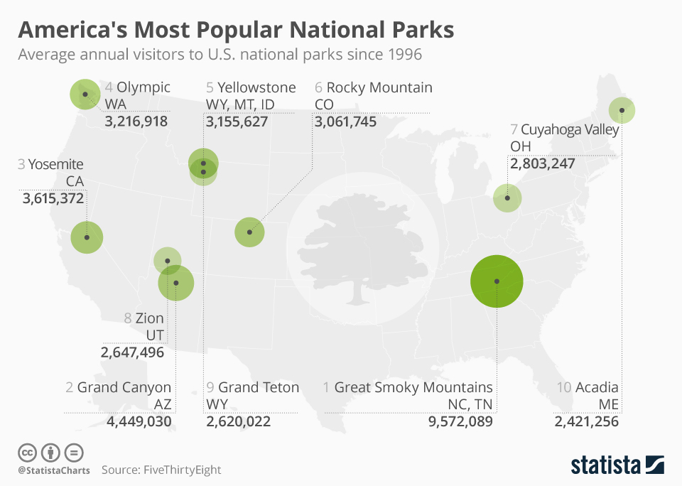

Statistics
View the most popular locations and details about those trips
Filter by location type
This feature allows you to view the statistics on different types of locations, such as national parks, hiking trailes, countries, or cities. You can also search for the most popular trips/locations in general
More information
National Parks
With an overwhelming lead, the Great Smoky Mountains in Tennesse is the most visited national park in the United States. There have been over 9 million reported visitors since 1996. The second most visited park is the Grand Canyon Followed by Yosemite in California.
Our users have reported visiting some of these parks around 3 days while spending time in nearby cities as well. Most of our users also had some type of guide to help them with their tour and exploring as much of the parks as possible. National parks are currently our most visited locations for trips by our users.